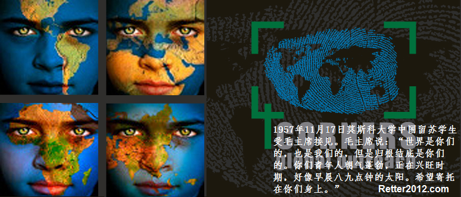

返回主页
好男儿志在四方

“Fear is not real. It is a product of thoughts you create. Do not misunderstand me. Danger is very real. But fear is a choice.” �D Will Smith
[After Earth] Cypher Raige: Fear is not real. The only place that fear can exist is in our thoughts of the future. It is a product of our imagination, causing us to fear things that do not at present and may not ever exist. That is near insanity 疯狂 Kitai. Do not misunderstand me, danger is very real, but fear is a choice. We are all telling ourselves a story and that day mine changed.
中国人纵横四海
恭喜你精彩（We are the world）
Israel Post-Army Youths backpack to the four corners of the globe.
Karla is a fanatic (狂热) and the fanatic is always concealing a secret doubt.
version:1.0; jobnet@188.com © retter2012.com